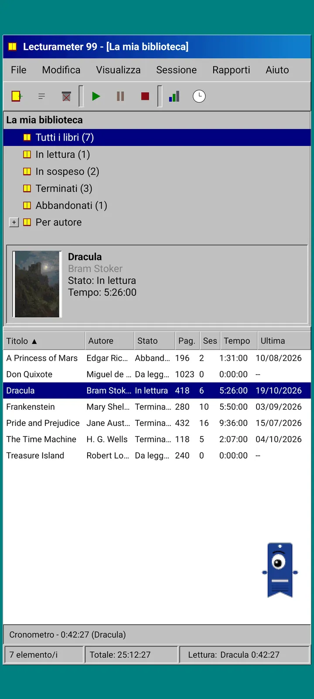
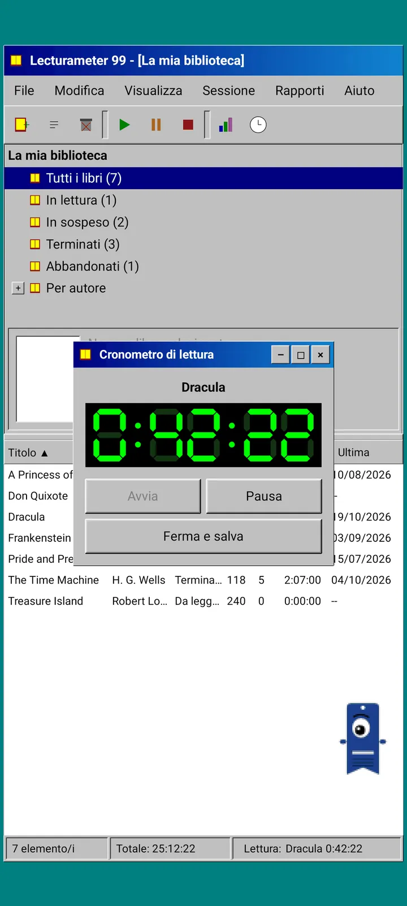
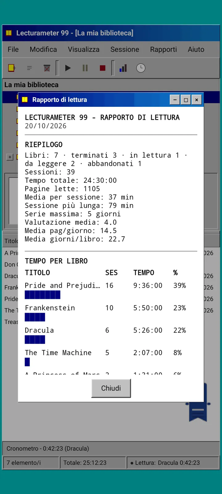
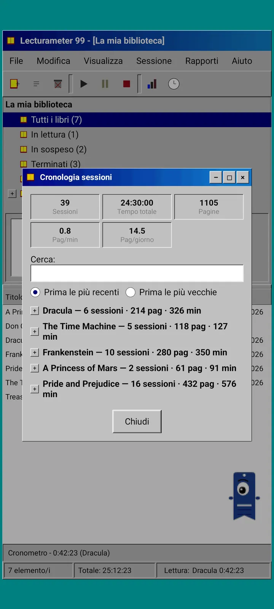
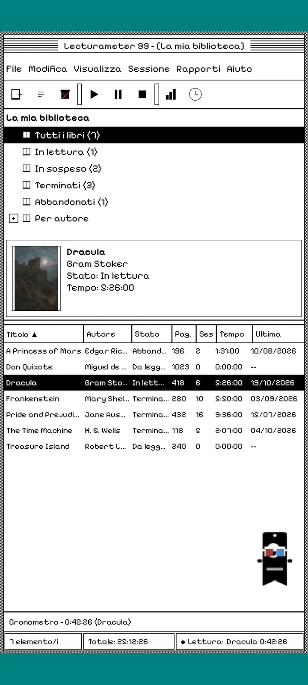
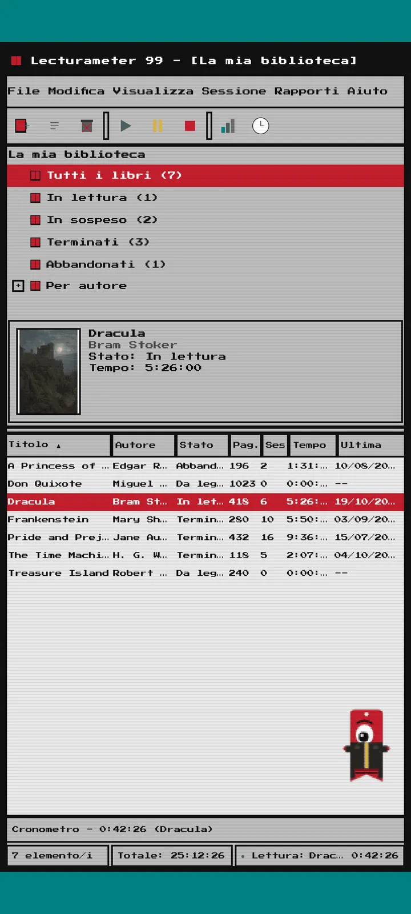
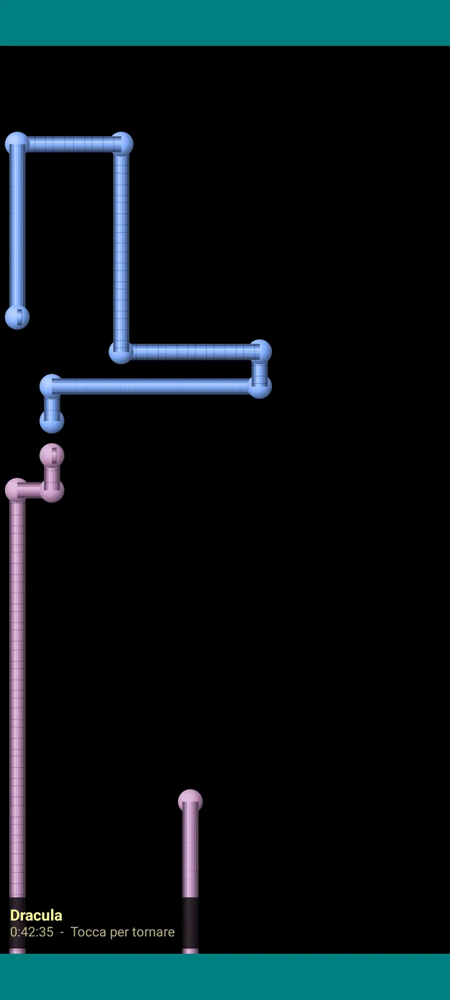

Lecturameter 1999
Lecturameter come se l'avessi installato da un CD-ROM nel 1999. Un client alternativo dell'app, con finestre, menu e tabelle, che apre i tuoi backup reali.

Che cos'è
Un programma desktop di fine anni Novanta che gira sul tuo telefono. Una sola finestra su un desktop verde acqua, una barra dei menu, una barra degli strumenti, un albero di cartelle, una tabella fitta e una barra di stato.
- Libreria ad albero: tutti i libri, in lettura, in sospeso, terminati, abbandonati e per autore
- Tabella con titolo, autore, stato, pagine, sessioni, tempo e ultima lettura. Tocca l'intestazione di una colonna per ordinare
- Ricerca di libri reale, con lo stesso catalogo che usa Lecturameter
- Importa ed esporta il backup di Lecturameter e il CSV di Goodreads. I tuoi dati entrano ed escono senza perdere nulla

Perché esiste
Un esperimento: ricostruire l'idea di Lecturameter da zero con premesse di design radicalmente diverse, senza toccare l'app vera. Tra tutte le reinterpretazioni, quella del 1999 è stata la mia preferita, quindi l'ho finita per divertimento e l'ho trasformata in un client completo. È volutamente più semplice di Lecturameter: è un esperimento e, in linea di massima, non avrà ulteriori sviluppi.
- Cronometro in una finestra mobile con display LCD verde. Si sposta, si riduce a icona su una barra delle applicazioni e continua a contare nella barra di stato
- Quando ti fermi, la finestra di salvataggio della sessione ti chiede le pagine e calcola il tuo ritmo, proprio come Lecturameter
- Le sessioni salvate sono sessioni di Lecturameter: tornano nell'app moderna se esporti un backup di Lecturameter 1999 e lo importi in Lecturameter.

Rapporto di lettura
Le statistiche sono un rapporto stampato: riepilogo, tempo per libro con barre a blocchi, velocità in pagine al giorno, un calendario dell'anno disegnato con i caratteri e gli ultimi sette giorni.

Cronologia delle sessioni
Sessioni raggruppate per libro in un albero con più e meno, con cinque valori in alto: sessioni, tempo totale, pagine, pagine al minuto e pagine al giorno.

Salva sessione
Data, minuti, prima e ultima pagina, commento. Il riepilogo calcola pagine e ritmo mentre scrivi. Se arrivi all'ultima pagina, ti chiede se hai terminato il libro.

Pagi 99
Anche Pagi viaggia fino al 1999: pixelato e libero sullo schermo come gli assistenti da ufficio dell'epoca. Puoi trascinarlo, dice una frase quando lo tocchi e mostra i suggerimenti in fumetti gialli.
Temi
Classico 98 è gratis ed è quello predefinito. Il pacchetto ne aggiunge altri sei, ognuno con il suo sfondo e i suoi suoni.

Sceglilo dal menu Visualizza
Visualizza, Tema... apre una finestra con i sette temi. Il cambio arriva subito a tutte le finestre, al cronometro e a Pagi.
- Classico 98, gratis e predefinito: finestre grigie, barre del titolo blu marino e desktop verde acqua
- Pacchetto di temi: 1984, Gommosa, Memoria, Torri, Nucleo e 8 bit
- Ogni tema porta il suo sfondo del desktop e i suoi suoni per i tocchi, le finestre e il cronometro
- Visualizza, Suoni del tema li disattiva se leggi in silenzio

Classico 98
Finestre grigie, barre del titolo blu marino e desktop verde acqua. Gratis, è quello con cui si apre l'app.

1984
Un desktop in bianco e nero a un bit, con retini a puntini e finestre squadrate.

Gommosa
Plastica colorata traslucida, pulsanti arrotondati e righe sullo sfondo.

Memoria
I menu di una console a dischi degli anni Novanta, in tonalità di blu scuro.

Torri
Un'altra console a dischi degli anni Novanta, blu notte con linee azzurre.

Nucleo
Una console nera e verde, come uno schermo che non si spegne mai.

8 bit
Pixel grossi, pochi colori e lettere squadrate.

Provalo prima di pagare
Tocca un tema bloccato e tutta l'app passa a quel tema. Se chiudi senza acquistare, torna il tema di prima.
Salvaschermi
Compaiono solo mentre il cronometro è in funzione e non tocchi il telefono. Aspettano 1, 3 o 5 minuti, oppure mai. Basta un tocco per tornare e il cronometro continua a contare.

Libri volanti
Libri pixelati che volano sbattendo le copertine su uno schermo nero.

Campo di lettere
Lettere di tanti alfabeti che scorrono piano, come un campo di stelle.

Tubi di pagine
Tubi fatti di pagine che si disegnano da soli fino a riempire lo schermo.

Pagi rimbalza
Pagi che rimbalza contro i bordi dello schermo.

Orologio di lettura
Il tempo della sessione in grandi cifre LCD.

Costumi per Pagi
Otto costumi per Pagi 99. Li scegli in Visualizza, Costume di Pagi..., e puoi provarli prima di pagare.
- Lettore di cassette
- Cappellino al contrario
- Occhiali 3D
- Occhiali da sole fluo
- Floppy disk in mano
- Giubbotto di pelle
- Animaletto tascabile
- Corona di cartone
Negozio
L'app è gratis e completa per registrare le tue letture. Quello che puoi acquistare cambia solo il suo aspetto.
Tutta l'app, senza limiti di tempo.
- Libreria, ricerca, cronometro e sessioni
- Rapporto di lettura e cronologia delle sessioni
- Backup di Lecturameter e CSV di Goodreads, in entrata e in uscita
- Tema Classico 98 e Pagi 99
- Nessun account e niente pubblicità
Pagamenti una tantum, nessun abbonamento.
- Pacchetto di temi, 3,49 €: 6 temi con sfondo e suoni, più i salvaschermi
- Salvaschermi, 1,99 €: i 5 salvaschermi
- Costumi di Pagi, 1,99 €: gli 8 costumi
- Tutto il 1999, 4,49 €: temi, salvaschermi e costumi
Mance facoltative nel menu Aiuto, se vuoi offrirmi un caffè.
Temi e costumi si possono provare dal vivo prima di pagare. Se chiudi senza acquistare, torna quello che avevi.
Cosa cambia rispetto a Lecturameter
Come in Lecturameter
- Stessi dati: libri, sessioni, stati, punteggi e note. Il file di backup è lo stesso nelle due app.
- Ricerca di libri per titolo o autore.
- Cronometro vero: continua a contare in background e anche se chiudi l'app.
- Nessun account, niente pubblicità, nessuna connessione tranne che per cercare libri.
- Le stesse lingue di Lecturameter.
Solo nell'edizione 1999
- Un'interfaccia desktop del 1999. Niente Material.
- Finestre vere: le trascini, le riduci a icona e le chiudi con la X.
- Rapporto di lettura in testo, con un calendario disegnato con i caratteri.
- Menu contestuale con la pressione prolungata e scorciatoie da tastiera se colleghi una tastiera.
- Pagi 99 pixelato con fumetti di suggerimenti.
- Temi opzionali con il loro sfondo e i loro suoni, salvaschermi mentre il cronometro è in funzione e costumi per Pagi.
Cosa non ha, di proposito
- Niente Pro e nessun abbonamento. Registrare le tue letture è tutto gratis, il negozio vende solo l'aspetto.
- Niente sfide, bingo, Wrapped annuale né widget.
- Niente sessione immersiva, suoni ambientali né backup su Google Drive. Il backup si salva come file.
Test chiuso
Lecturameter 1999 è in test chiuso su Google Play. iOS arriverà più avanti, ancora senza data.
- Unisciti al gruppo groups.google.com/g/lecturameter-1999
- Iscriviti come tester su play.google.com/apps/testing/com.lecturameter.r1999
- Installala da Google Play
In test chiuso su Google Play, iOS più avanti. Leggi l'articolo del blog per scoprire da dove nasce e cosa aspettarti.